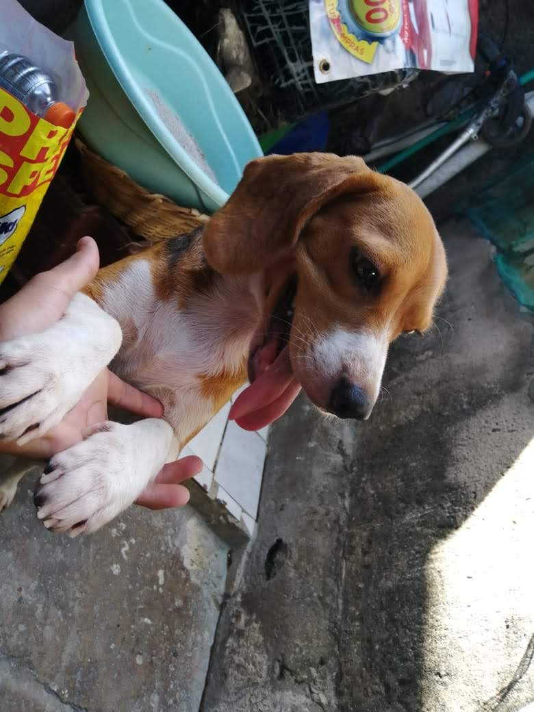
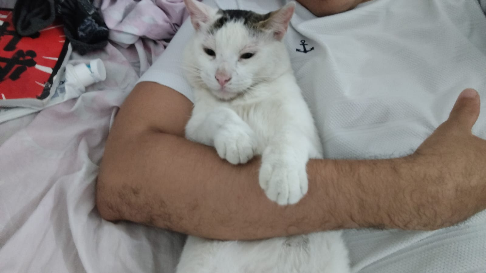
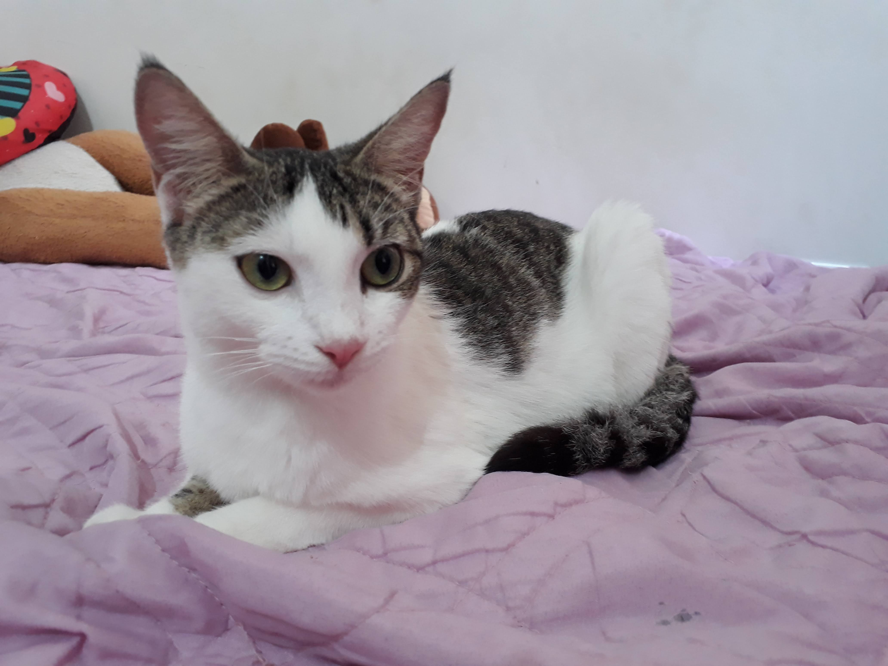

Cloe
Raza: beagle
Cloe fue mi primera perrita, pequeña en tamaño pero inmensa en cariño. Tenía esa forma única de hacerse notar, de llenar cada rincón con su presencia, como si entendiera que su misión era acompañar y dar amor sin medida. Le encantaban las noches, como si el mundo tranquilo y silencioso fuera su escenario favorito; más de una vez se escapaba en pequeñas aventuras, siguiendo su curiosidad y ese espíritu libre que la hacía tan especial. Le gustaba dormir en el piecero de mi cama, acurrucada, tranquila, como si cuidara mis sueños sin hacer ruido. Y algo que nunca se me olvida es cómo ladraba cuando yo llegaba… no era un ladrido cualquiera, era su manera de decir “te extrañé”, de recibirme con una emoción pura que pocas veces se encuentra. Cloe no era solo una perrita, era compañía, era rutina, era alegría en los detalles más simples. Fue ese primer vínculo que enseña lo que significa querer a un animal: con ternura, con paciencia y con un amor que se queda incluso cuando ya no está.

Kristofer
gato
Kristofer es mi gato, un compañero con una personalidad tan única que es imposible no encariñarse con él. Tenía esa mezcla perfecta entre independencia y cariño: puede pasar horas en su mundo, observando todo con esos ojos curiosos, pero también sabe cuándo acercarse y acompañarme en silencio, como si entendiera exactamente lo que necesitaba. Le gusta recorrer la casa como si fuera su reino, explorando cada rincón con elegancia y misterio. A su manera, también demostraba amor: con su presencia tranquila, con esos momentos en los que se quedaba cerca sin hacer ruido, o cuando decidía acostarse conmigo, compartiendo ese espacio como si fuera un pequeño ritual entre los dos.

Kira
gato
Kira es una gata de carácter fuerte, de esas que no toleran bobadas ni juegos innecesarios. Tiene una actitud seria y dominante, como si todo a su alrededor le perteneciera. A veces puede ser algo agresiva, marcando muy bien sus límites, pero eso hace parte de su personalidad única. Aun así, es innegablemente hermosa, con una presencia que impone y atrae al mismo tiempo. Kira camina como si fuera una reina, segura de sí misma, elegante y con esa mirada que parece decir que el mundo gira a su alrededor… y, en cierto modo, lo hace.
